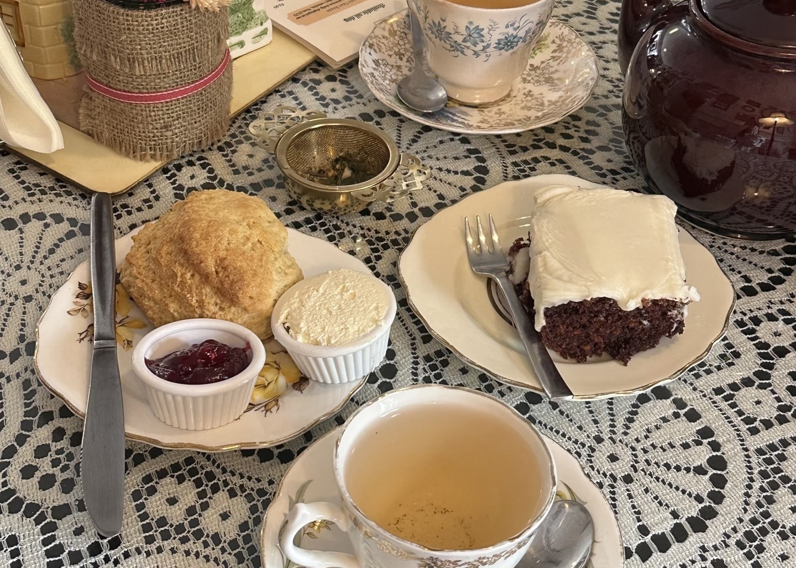

"茶，香叶，嫩芽。慕诗客，爱僧家。碾雕白玉，罗织红纱。铫煎黄蕊色，碗转曲尘花。夜后邀陪明月，晨前命对朝霞。洗尽古今人不倦，将至醉后岂堪夸。"
精选茶故事

龙井茶的传说
相传乾隆皇帝下江南时，在杭州西湖边品尝了龙井茶，赞不绝口，并将其封为御茶...

普洱茶的千年历史
普洱茶产自云南，有着悠久的历史文化，是茶马古道上的重要商品，越陈越香...

英国下午茶的起源
下午茶文化起源于19世纪的英国，由贝德福德公爵夫人安娜创立，逐渐成为社交活动...

日本茶道的起源
日本茶道源于中国唐代的饮茶方式，经荣西禅师传入后，逐渐发展出独特的"侘寂"美学...

潮汕工夫茶的讲究
潮汕工夫茶是中国茶道文化的瑰宝，讲究"和、爱、精、洁、思"，茶具精致，冲泡手法独特...

茶马古道的茶事
茶马古道不仅是贸易通道，更是茶文化传播的纽带，连接中原与边疆，促进文化交流...